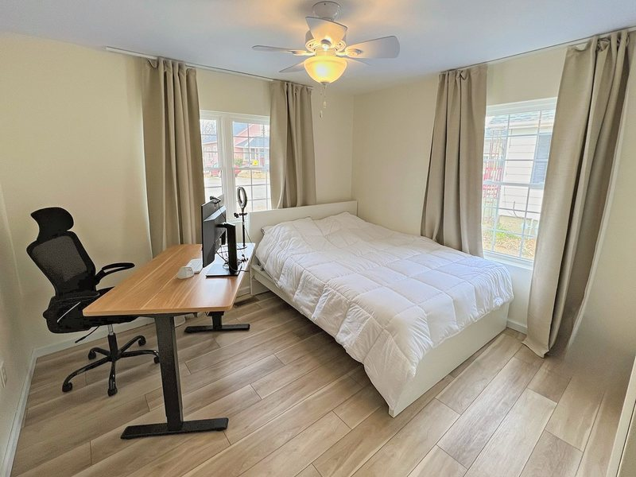

Work from the house
Dedicated desk with an ergonomic chair and fast Wi-Fi.
Live like at home
Full kitchen with dishwasher, your own washer and dryer, quiet street.
Arrive on your schedule
Self check-in with a smart lock from 4 pm. Nothing shared with other guests.
Weekly & monthly discounts · No county lodging tax on stays of 32+ nights



Photos, dates & booking
perryvillestay.com
Scan the code or visit the website. Booking and messages through Airbnb – discounts apply automatically, receipts for your company in your Airbnb account.
Clean, minimalist European style · Restored in 2022
Approx. drive times: TG Missouri 5 min · National Shrine 4 min · downtown square 2 min · Aldi 4 min